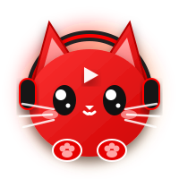

İstenmeyen öneriler ve sonsuz video tuzakları yok! Sadece takip ettiğiniz kanalları arka planda otomatik indirin, %100 reklamsız ve çevrimdışı izleyin.
SponsorBlock Entegre
Node + yt-dlp + FFmpeg Dahil
Otomatik Altyazı Çevirisi

Tüm kontroller sizin elinizde. Arka planda sessizce çalışan otomasyon motoru.
Takip ettiğiniz kanalların RSS akışlarını periyodik kontrol eder. Yeni bir video yüklendiğinde anında yerel diskinize indirir.
Sponsorlu bölümleri, introları ve abonelik hatırlatmalarını zaman tünelinde otomatik atlar. Sıfır reklam, sıfır dikkat dağınıklığı.
Node.js, yt-dlp ve FFmpeg arşivin içinde hazır gelir. Harici hiçbir kurulum veya paket yöneticisi gerekmez.
İster tarayıcıda Artplayer / Plyr ile izleyin, ister bağımsız C# WPF native oynatıcıyla diskten sıfır gecikmeyle yürütün.
Türkçe/İngilizce altyazıları otomatik çeker. 11 hedef dilde anlık çeviri ve 12 farklı altyazı renk/boyut özelleştirmesi sunar.
İzleme konumunuzu otomatik gerçek YouTube izleme geçmişinize senkronize eder. Toplu video işaretleme desteği sağlar.
İzlediğiniz videoyu, kanal adını ve süresini Discord durumunuzda şık bir şekilde otomatik gösterir.
Her kanala özel otomatik indirme, Shorts videolarını engelleme ve maksimum/minimum süre filtreleri belirleyin.
Sistem tepsisinde (Tray) arka planda sessiz çalışır. Etkileşimli terminal komutları ile (`ton`, `toff`, `pd`) anında yönetilebilir.
Modern koyu tema, çift oynatıcı deneyimi ve gelişmiş yönetim paneli.
Gelişmiş yerel oynatıcımızda farenize dokunmadan her şeyi kontrol edin.
Tüm bağımlılıklar paket içinde hazır gelir; ek kurulumla uğraşmayın.
Klasör içindeki HaYTooL YT Downloader.exe dosyasını çift tıklatarak sistem tepsisinde başlatabilirsiniz.
Veya bağımsız masaüstü C# oynatıcısını çalıştırmak için:
Dashboard varsayılan olarak http://localhost:4141 adresinde açılır.
Terminalden çalıştırma izni verin ve başlatma scriptini çalıştırın:
Çift işletim sistemli (Dual-boot) sistemlerde config parametreleri otomatik izole edilir.